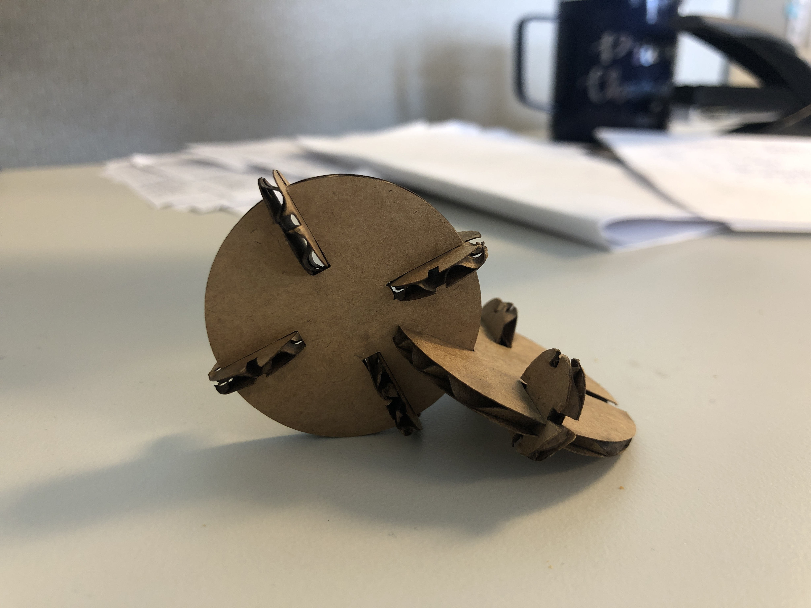
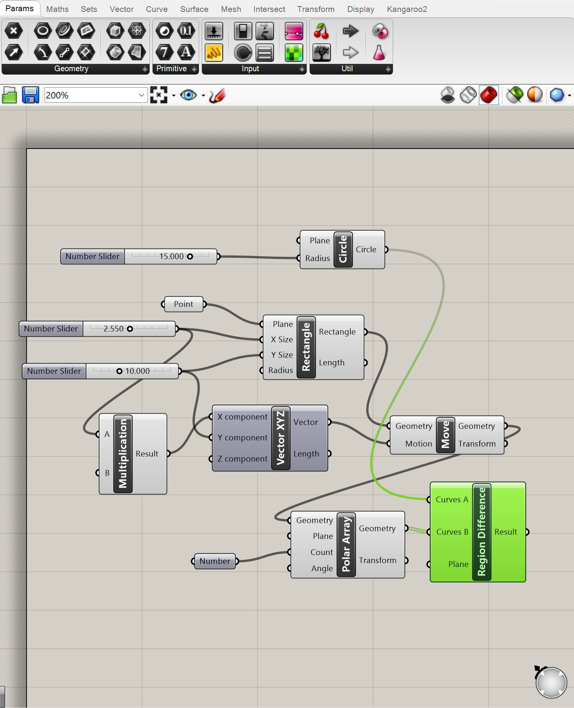
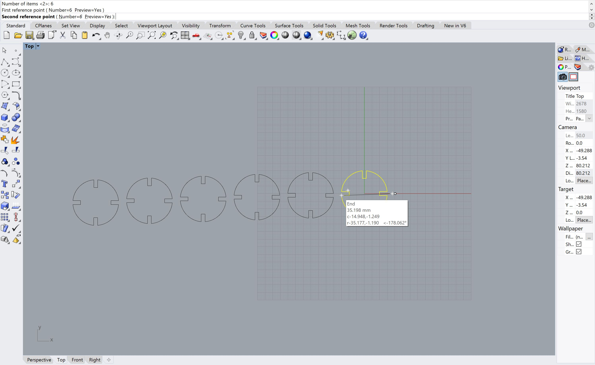
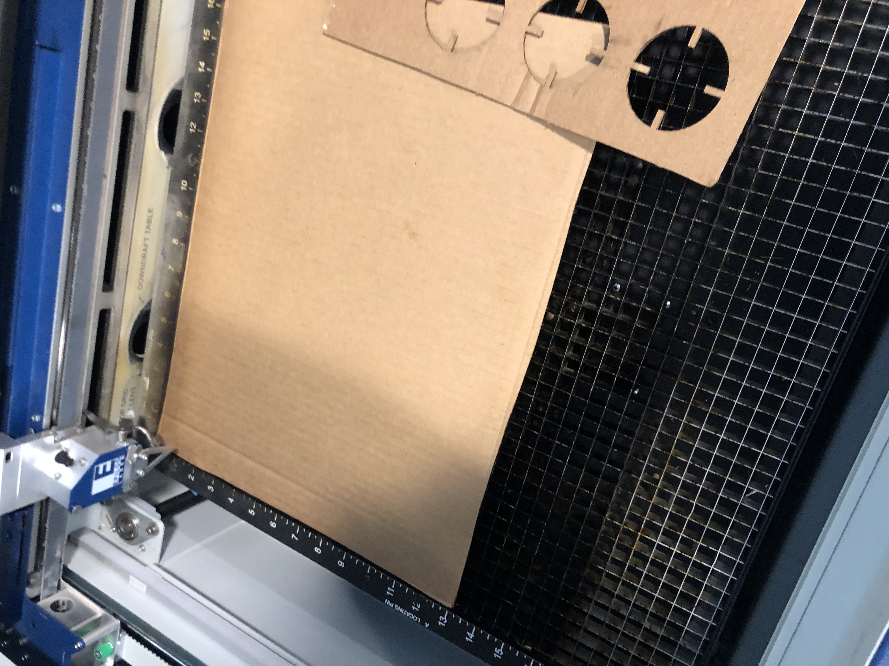
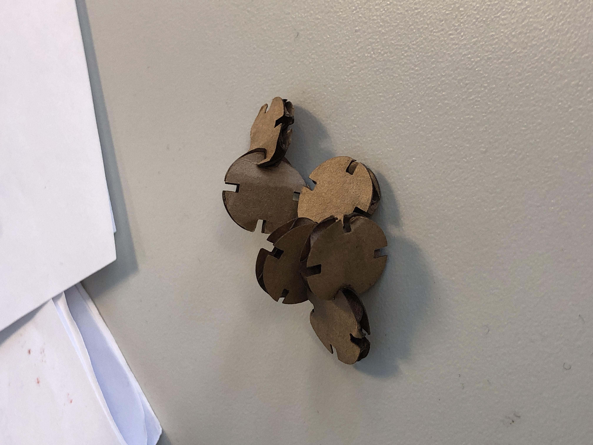
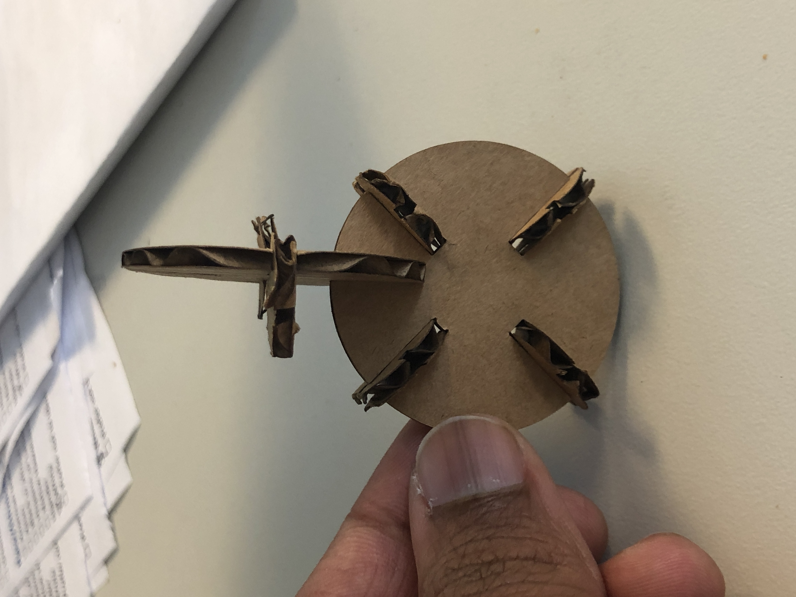

Assignment 2
Based on last week's assignment, where I made a construction kit consisting of two shapes, circles and triangles, I wanted to continue exploring the basic shapes as we use parametric design and more advanced tools to continue fabrication. Again, I believe that geometric patterns, symmetry, and repetition are all good components of a construction kit, so I felt confortable emulating my previous designs.
I found it very challenging to use the Grasshopper interface, and wanted to spend most of my time understanding the software rather than on design.
For this assignment, having two create two designs with varying thicknesses threw my previous experience for a twist. I repeated the steps I did for the first assignment (measure cardboard, use measurement to determine the size of the slots), and converted those measurements and drawings into Rhino / Grasshopper.

I then repeated the process for my thicker cardboard, but used Grasshopper to quickly change the settings to match the thickness of the cardboard. It was in this moment that I realized the value in Grasshopper, as that change would've taken longer in another program. Grasshopper again showed it's value when I used the ArrayLinear command, to quickly replicate my designs and prepare it for export to Illustrator for printing.

I imported the files into Illustrator, and followed steps similar to last week where I re-sized the artboard to the size of my cardboard, set the stroke width to .001, and laid out the shapes.
I then started with a test print of a few shapes, to see what settings would work best, and if the gaps I had designed would work together.

My print settings for my first print were as follows:
After printing the first two shapes, I found (to my dismay) that they did not fit together, and would need to go back to the metaphorical drawing board. Neither my thin or my thick cardboard pieces (two seperate test prints) fit together, which I found very dishartening, especially considering I did not encounter any measurement errors in my first print, and I was unsure where I went wrong in the process. I believe it had something to do with the conversion from Grasshopper to the Illustrator file. This made me make sure to check the scaling and size settings before printing again.
recycled_dreams.jpg
I adjusted the depth of the slits, and printed again using the settings I used before and ended up with my final cuts! While the scale was much smaller than I intended for the thicker pieces, I still ended up with working pieces.

Instead of correcting the scale, I decided to work with the challenge of using larger and smaller pieces, and making them fit together.

After printing out all my pieces successfully (printing more than I needed just in case!), I began to assemble the pieces in a connected pattern, layering the smaller and larger pieces together. The final product is below:
Reflection
Unlike last week, the most difficult part of this assignment for me was learning how to recreate the steps I am familar with in Grasshopper. Whenever learning a new tool, my focus is on what I immediately need to know to create an object, but I did not find Grasshopper intuitive at all, and felt a little out of my league. I also felt that I was severely underutilizing the software, although I'm sure we will be using it for more complex 3D shapes or models.
Additionally, I may have felt some misplaced confidence after not experiencing any major troubles last week, and felt I had measuring down (Narrator: he did not).
However, the process was still rewarding, having to work through my design and make adjustments, and at times it really made me want to think outside of the box and try other solutions. Unfortunately given time constraints I was not able to be as experimental as I'd like, but it certainly motivates me to work with multiple mediums later on in the quarter, and possible experiment with designs that don't typically go together.
Collaborators:
Thanks to Elizabeth Q. for helping me not smashing my computer while trying to figure out Rhino / Grasshopper, and also to Dave (through the grapevine) for helping us realize that Grasshopper measurements are in milimeters.
Source Files:
Illustrator File
Rhino File
Grasshopper File